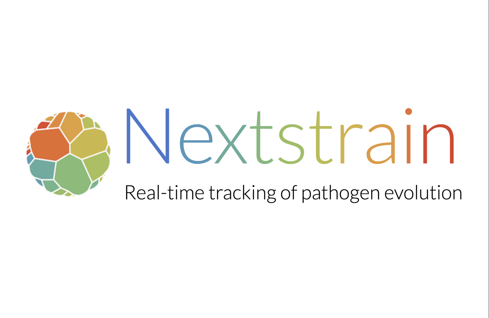
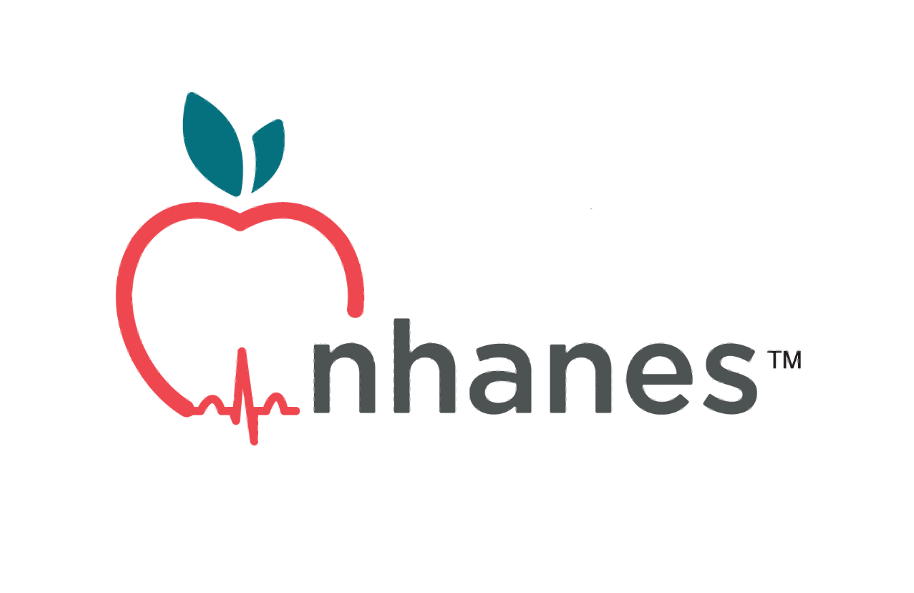
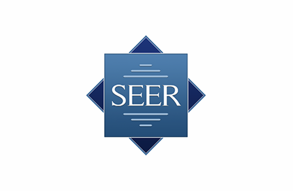

The Health Attribution Library
We compile studies that conduct end-to-end attribution studies on the human health impacts of human-caused climate change. The Health Attribution Library is a living resource, meant to provide evidence in support of scientific research, journalism, public interest, litigation, and political negotiations.

Worldwide Index of Serotype Specific Pneumococcal Antibody Responses (WISSPAR)
The Worldwide Index of Serotype Specific Pneumococcal Antibody Responses (WISSPAR) is a centralized platform housing data on immunogenicity from clinical trials of pneumococcal vaccines. The data on WISSPAR are primarily curated from outcomes tables from clinicaltrials.gov and are made available in a searchable format that can be readily used for downstream analyses. Fields included in the database include product, manufacturers, dosing schedule, age group, and geographic region. You can use the embedded tools to generate customizable visualizations, export data for further analyses, or just browse through clinical trial results.

Nextstrain
Nextstrain is an open-source project to harness the scientific and public health potential of pathogen genome data. Here are a few of our ongoing ‘community’ Nextstrain projects. Note that most of these analyses are preliminary, so interpret with caution. We love to collaborate – contact us if you’d like to join one of these exciting projects!

Yale University Open Data Access (YODA)
In our opinion, good science isn’t done in a vacuum. Sharing information among our peers is critical for responding to a public health crisis and understanding the mechanisms driving emerging diseases. We’ll release our virus genetic data and any useful protocols or analysis tools as soon as they are generated. Please note that because these are usually early releases (pre-publication), they may contain mistakes. We’ll make protocols, analysis tools, and data available as they are developed.

Yale New Haven Health System (YNHHS) Epic
Cosmos is a dataset created in collaboration with a community of health systems using Epic and is designed to improve patient care. By combining their data, participating organizations and Epic can make new discoveries and advance medicine. Cosmos also powers tools at the point of care, providing insights to clinicians that are tailored to the patient in front of them.

National Center for Health Statistics (NCHS)
The National Center for Health Statistics (NCHS) collects and disseminates data to provide a comprehensive understanding of health and healthcare in the United States. The data includes birth and death records, medical records, interviews, physical examinations, and laboratory testing, and is accessible through reports, dashboards, and data files to identify health problems, develop policies, and monitor health trends.

NCHS's National Health and Nutrition Examination Survey (NHANES)
The National Health and Nutrition Examination Survey (NHANES) collects data about the health of adults and children in the United States. This data has driven changes in medical treatment practices and public policy supporting good health . Since its inception in 1959, NHANES has completed eight distinct iterations of the survey, with the latest being conducted as an ongoing surveillance program. These efforts have led to the creation of four special focus programs or ancillary studies.
Researchers can access both publicly available and restricted data produced by NHANES from all survey installments. Moreover, researchers have the opportunity to request biospecimens collected during some surveys, allowing for the generation of additional data points that enhance the research community's resources.

NCHS's National Health Interview Survey (NHIS)
The National Health Interview Survey (NHIS) monitors the health of people across the country—the U.S. population—by collecting and analyzing data on a broad range of health topics. NHIS focuses on the health of U.S. children and adults.
CDC's National Center for Health Statistics (NCHS) conducts NHIS. It is the nation's largest and oldest national health survey. NHIS began collecting data in 1957.
Each year, NHIS collects data from about 27,000 adults through confidential, face-to-face interviews throughout the year. Many of these adults also provide health information about children in their households.
NHIS collects data from civilians who don't live in institutions. Civilians are people not serving on active duty in the military. Institutionalized people live in places like correctional facilities, skilled-nursing homes, and mental (psychiatric) hospitals.

NCHS's The National Health Care Surveys (NHCS)
Overview: The National Health Care Surveys are a family of surveys that provide information about—
- Organizations and providers that deliver health care
- The healthcare services they provide
- The patients they serve across diverse healthcare settings
- Researchers, policymakers, and health professionals can use data from our surveys to understand providers, patients, and management and delivery of patient care in the United States.

NCHS's Rapid Surveys System
The National Center for Health Statistics (NCHS) fields Rapid Surveys fast and often. We can easily adapt these surveys to collect specific information as needs arise. This makes evidence-based decision making better and faster for those working to protect and improve health in the United States.
Rapid Surveys can be used to—
- Collect data on niche, emerging, or priority health topics
- Close health information gaps
- Learn how values and beliefs can affect access, care, and wellness
- Assess questionnaire design to ensure data collection is meaningful
- By getting the right data in the right hands at the right time, the NCHS Rapid Surveys System is helping make science more responsive and actionable.

NCHS's National Vital Statistics System (NVSS)
The National Vital Statistics System is the oldest and most successful example of inter-governmental data sharing in Public Health and the shared relationships, standards, and procedures form the mechanism by which NCHS collects and disseminates the Nation’s official vital statistics. These data are provided through contracts between NCHS and vital registration systems operated in the various jurisdictions legally responsible for the registration of vital events – births, deaths, marriages, divorces, and fetal deaths. Vital Statistics data are also available online. In the United States, legal authority for the registration of these events resides individually with the 50 States, 2 cities (Washington, DC, and New York City), and 5 territories (Puerto Rico, the Virgin Islands, Guam, American Samoa, and the Commonwealth of the Northern Mariana Islands). These jurisdictions are responsible for maintaining registries of vital events and for issuing copies of birth, marriage, divorce, and death certificates.

NCHS's Data Linkage Activities
NCHS has developed a record linkage program designed to maximize the scientific value of the Center’s population-based surveys. Linked data files enable researchers to examine the factors that influence disability, chronic disease, health care utilization, morbidity, and mortality.
NCHS is currently linking various NCHS surveys with administrative data from the following:
- National Death Index (NDI)
- Centers for Medicare and Medicaid Services (CMS)
- Medicare
- Medicaid/CHIP
- United States Renal Data System (USRDS)
- Social Security Administration (SSA)
- Department of Housing and Urban Development (HUD)
- Department of Veterans Affairs (VA)

Surveillance, Epidemiology, and End Results Program (SEER)
The Surveillance, Epidemiology, and End Results (SEER) Program provides information on cancer statistics in an effort to reduce the cancer burden among the U.S. population. SEER is supported by the Surveillance Research Program (SRP) in NCI's Division of Cancer Control and Population Sciences (DCCPS).

National Institutes of Health's (NIH) All of Us (AOU)
The All of Us (AoU) initiative, overseen by the National Institutes of Health (NIH), is a precision medicine program that connects researchers, healthcare providers, technology experts, community partners, and the public. It aims to gather longitudinal data from diverse participants to create effective individualized treatments. Currently, around 600,000 participants have contributed electronic health records (EHR), completed surveys, provided physical measurements, and donated biospecimens.
All of Us' one-of-a-kind dataset is stored on the Researcher Workbench, a secure, cloud-based platform where registered researchers can access data from surveys, genomic analyses, EHRs, physical measurements, and wearable devices. The data collected include standardized EHRs, biosamples for genomic sequencing, surveys on demographics and health behaviors, physical measurements, and health tracking data from wearable devices, with additional data contributed by partnered research studies.

data.gov
Here you will find data, tools, and resources to conduct research, develop web and mobile applications, design data visualizations, and more.

UK Biobank
The UK Biobank Data Showcase provides a summary of all the information gathered by UK Biobank on our 500,000 participants and is available to explore. Not only does this contain background information on how these data were collected, it also includes notes about future collections. Before applying to access UK Biobank data, or if you are already accessing data, please keep up to date by checking the notes and additional resources provided with categories and data-fields for useful information. Please note: data is only accessible through our Research Analysis Platform.

Merative's MarketScan
Merative advances health and social care by providing innovative healthcare data and technology solutions, collaborating with thousands of providers and major organizations. Their MarketScan Research Databases offer longitudinal, patient-level data on healthcare costs and outcomes, supporting diverse research applications with data from over 273 million patients and more than 2,600 peer-reviewed publications. MarketScan's detailed and HIPAA-compliant data enhance research across disease areas, backed by powerful analytic tools.
At Yale, the MarketScan database is licensed for research use by the Yale Biomedical Informatics and Computing (YBIC) office, with support from the Harvey Cushing/John Hay Whitney Medical Library and the Yale Center for Clinical Investigation. Yale researchers can access and analyze MarketScan data by submitting a request form for assistance from the YBIC team.